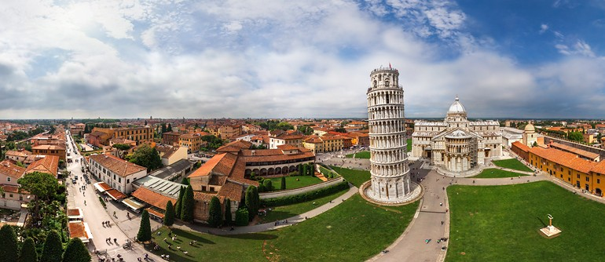

.png)
Zyla's Space
Welcome to My Space!
Me, myself,
and the things I'm fond of.
The Unexpected Beauty of Imperfection

Humans always have the tendency to want everything to be perfect or ideal. It’s as if we can arrange anything, we would make anything goes the way we want it. Probably to reach our own imagination of perfection or happiness. People want to master things, being able to do their jobs without missing or failing anything. Sometimes, people also want to see every object as flawless as it can be. As an example, there are many people out there that have had plastic surgeries just to get the “perfect” face or body.
However, in this life, there is nothing that’s completely ideal or “perfect”. Everyone and everything have their own flaws. Sadly, at times, some people or possibly all of us fail to realize that the existence of imperfection has its own worth. Imperfection can unexpectedly make something even more precious. Imperfection brings uniqueness to things hence it makes them special. I believe we all know the famous tower of Pisa. That building is so popular that even though I live over 10.000 kilometres away, I have known it since I was a little kid. But what actually makes it so popular? Yes, an imperfection—the tower of Pisa is famous because it’s leaning. Had it not been tilted; would I have even heard of it? I guess that’s one example of imperfection adds a new value to an object.
Then, besides making things special, imperfections can also remind us that there are good things around—or we may call it “perfect”. The fact that we can easily distinguish an imperfection shows that the better things which we consider perfect are still dominating in our life. I think if the imperfections are that much, we wouldn’t even be able to easily notice them. This way, as we now realize that imperfection only covers a small part of our life, we should be grateful for the perfections we have. Now that I think about this, I’ve come to believe that imperfection is a part of this world’s perfection.